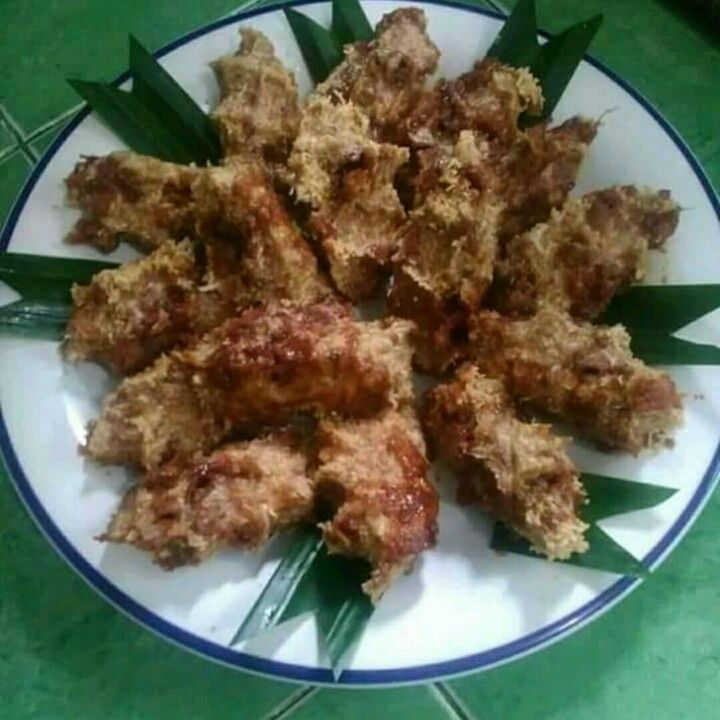

Pohul-pohul

Kue pohulpohul merupakan kudapan khas tradisional Batak dari Tapanuli, Sumatera Utara. Bentuknya seperti kepalan jari tangan.
Cara membuatnya sederhana dan mudah, yakni dengan dicetak dengan tangan. Itu sebabnya disebut kue pohulpohul, yang berarti kepalan.
Dulu, pohulpohul sering disajikan dalam acara adat Batak marhusip.
Marhusip merupakan musyawarah adat persiapan pernikahan. Kini, kudapan lezat ini disajikan dalam berbagai acara.
Bahan & alat:
Bahan:
- 500 gram tepung beras baru.
- 1,5 butir (600 gram) kelapa muda parut.
- 150 gram gula merah, sisir kasar.
Langkah memasak:
- Campur semua bahan dengan sedikit air (air masak yang sudah didinginkan).
- Ambil sekepal adonan.
- Kepal-kepal hingga membentuk jari.
- Kukus dalam dandang selama 15 menit hingga matang, sajikan.
- Untuk yang mentah, setelah dikepal, letakkan dalam piring kecil. Bisa langsung dimakan.